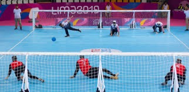
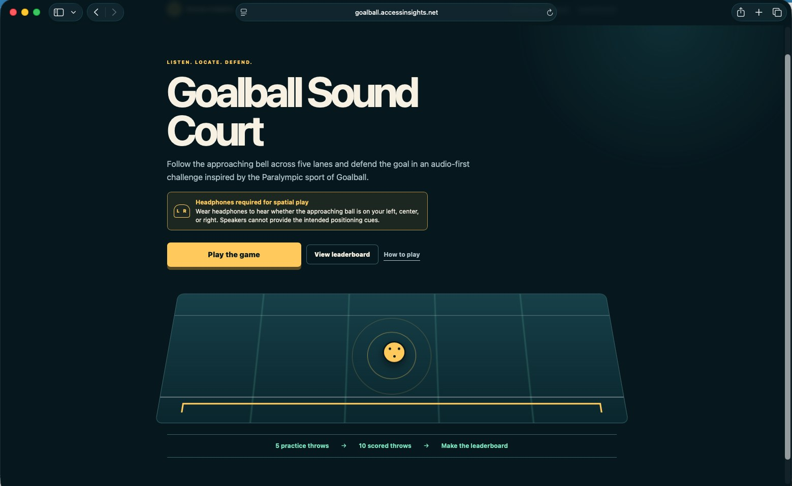
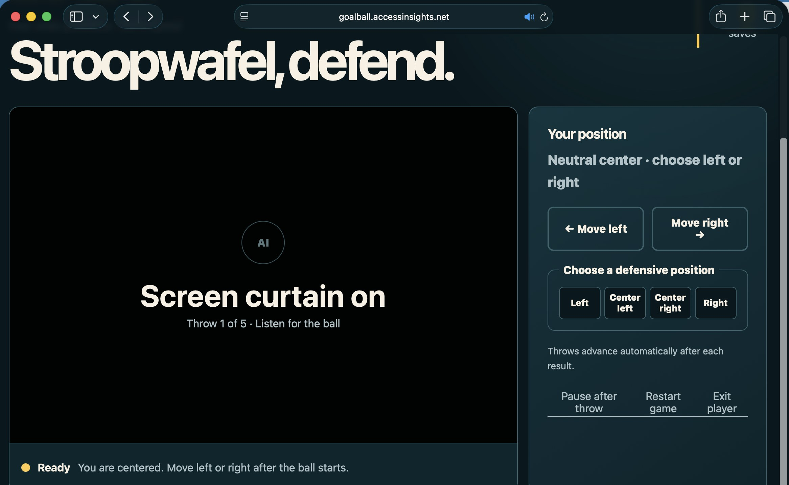

Access Insights · Case Study
Goalball
The best sport you have never heard of. Goalball is a Paralympic team sport played entirely by ear: three players a side, a ball with bells inside it, and eyeshades so nobody can see. The Goalball project is an illustration of the multidisciplinary capabilities of the Access Insights team. It brings together immersive binaural audio, game design, education and training, subjective evaluation, and experience evaluations, in one piece of work.
Goalball three on three team game play, recorded binaurally at a team practice. Put on headphones and the court is around you: the bells travel from one side to the other, and the defenders slide across the floor to meet them.
The sound files on this page are binaural recordings. What you hear depends on the headset and settings used for playback. The full immersive experience uses a fully calibrated binaural playback system.
- The sport
Goalball, a Paralympic team sport for blind and visually impaired athletes
- Partners
Adaptive Sports Northwest goalball team and the Washington School for the Blind
- The data set
Over 130 binaurally recorded throws, plus referee calls and a full game
- Disciplines
Binaural audio, game design, education and training, subjective and experience evaluation
- Record the sport
- Build the data set
- Study how people localize sound
- Prototype the game
- Broadcast, train, deploy
The sport
A game you play with your ears.
Goalball is a specialized Paralympic team sport for blind and visually impaired athletes. Teams field three players per side. The goal is to throw a 1.25 kg ball with bells inside it into the opponent's net, which stretches the full width of the court, while the other side dives to block it. The game is played on an indoor court with taped lines that players read by touch for orientation.
Every player wears black-out eyeshades, so competition is equal regardless of how much sight anyone has. Everything that matters in goalball arrives as sound: the bells in the ball, the thud of a throw, the slide of a defender, the referee's calls. That is exactly what makes it the right sport for this work.

The objectives
Bring the court to the audience, and the audience onto the court.
Immersive recording for live and recorded games
Create immersive recording setups to broadcast live games and record games for local and remote audiences, so that a listener at home hears the match the way a player on the court hears it.
An interactive goalball game
Develop an interactive game where people can play goalball using immersive binaural sound, with friends, family members, or online, and no sight required.
Sound localization practice
Use the interactive game to train sound localization: the same skill goalball athletes build on the court, made practicable anywhere with a pair of headphones.
Haptics and tactile systems
An interesting extension of this proposal could explore a combination with haptics and tactile systems, adding touch to the sound so the ball can be felt as well as heard.
The key
Realistic sound is the whole game.
Realistic sound is key. For play, it is what allows a listener to locate the source: which lane the ball is in and how fast it is coming. For the audience, it is what makes the match immersive rather than a flat recording of bells. Spatial audio techniques offer two complementary routes. Binaural recording and playback, with a fully calibrated system, allows unmatched realism from real throws on a real court. Binaural rendering engines can then synthesize virtual sound for lanes, players, and situations that were never recorded.
Good steps by other teams
NTT built immersive multi-speaker setups for "watching goalball by ear" [1, 2]. Drexel University turned goalball into a virtual video game [3]. Dentsu Lab Tokyo designed recording setups for inclusive broadcasting [4]. The scientific literature on sound source localization is deep [5–13], and there is evidence that sound localization may be improved by playing goalball [14].
More realistic recordings and renderings
Some good steps have been made, but there are valuable opportunities with more realistic sound recordings and renderings: calibrated binaural capture at the positions where players actually stand, and rendering engines validated against those recordings by the people who play the sport.
The research plan · the data set
First, record the real thing.
Access Insights created a large binaural goalball data set at an Adaptive Sports Northwest goalball team practice at the Washington School for the Blind, with experienced goalball players and referees. Calibrated binaural headsets recorded each play from both the throw and the defense locations. Over 130 throws with different paths were recorded, segmented, and labeled, along with referee calls and the actual play of a full game.
- 130+throws recorded, segmented, and labeled
- 2calibrated binaural headsets, at the throw and defense positions
- 1full game, with referee calls, recorded as it was played
Listen to the data set · headphones required
Each throw was captured from both ends of the court at the same moment. Compare the pair: the same ball, heard by the thrower and by the defender.
- Throw 1–5, goal 1
Heard from the throw
- Throw 1–5, goal 1
Heard from the defense
- Throw 4–2, goal 2
Heard from the throw
- Throw 4–2, goal 2
Heard from the defense
- Referee
"Quiet please. Play."
- Full game
Three on three game play
The research plan · the studies
Then find out what people can actually hear.
The recorded data set is the material for a series of subjective studies with three groups of participants: experienced goalball players, low-vision non-goalball players, and sighted non-goalball players. Putting all three in front of the same recordings is what separates the effect of the sport from the effect of vision.
What the studies will investigate
Who listens
- experienced goalball players
- low-vision non-players
- sighted non-players
What is measured
- ability to identify recorded ball paths
- efficacy of calibration, recording, and playback setups
- how much time localization takes
- influence of goalball experience on accuracy
- influence of recording elevation on localization
- ability to identify synthetic binaural sounds
What the answers are for
Every study feeds a design decision: which recording setup to broadcast with, how realistic a rendering engine has to be before players accept it, and how the game should be tuned to teach localization rather than just test it.
Real players judge the realism. Always.
- recorded paths, then synthetic ones
- calibrated playback, then everyday headsets
- players first, then everyone else
The research plan · prototypes and evaluations
A game you can already play.
Three prototypes come out of the plan: an immersive recording and broadcast architecture and setup; interactive virtual goalball games, from single-player defense to a one-on-one game to multiplayer; and training of sound source localization using the virtual game. The first is built. The prototype for the single-player defense game is complete, as a browser-based implementation for phone and PC, and the recordings for the one-on-one game are done.


Done
Single-player defense game prototype, browser based for phone and PC • binaural recordings for the one-on-one game • the labeled data set of over 130 throws, referee calls, and a full game.
From recordings to any court
Develop synthetic binaural rendering for free lanes and multiplayer • research to quantify localization accuracy and time, calibration, experience and vision effects, and synthetic versus real recordings • deploy to users, schools, and goalball players.
Beyond the court
Other applications of binaural sound.
The same capability reaches well past sport. Binaural sound can help separate overlapping speech: subjective studies demonstrated clear benefits of separating speakers and sources spatially, with increased intelligibility and accuracy and reduced cognitive effort. Once a listener can tell where a sound is, a whole set of practical applications opens up.
- Coaching
Covert coaching for IDD
Binaural audio as scaffolding for people with intellectual and developmental disabilities: a coach's voice placed quietly beside the listener, distinct from the room, so support is present without being public.
- Presence
Virtual remote interaction
Immersive binaural sound recording and playback for virtual remote interaction, so a person who cannot be in the room still hears it as a room.
- Meetings
Spatially placed participants
Spatially place meeting participants using binaural rendering in virtual and online meetings, so overlapping voices separate the way they do around a table.
- Navigation
Auditory waypoints
Navigation and spatial auditory placement of waypoints: a destination you can hear, in the direction you need to walk.
- Exploration
Binaural soundscapes
Binaural soundscapes for immersive explorations and virtual environments, from a hike to a museum to a building you are about to visit for the first time.
What this case proves
One project, every discipline on the team.
Goalball is a small sport with a big lesson in it. To do this work at all, a team has to record sound with laboratory calibration, design a game that is playable without sight, teach a perceptual skill, and measure, with real players and real listeners, whether any of it is true. Access Insights has all of those capabilities in one room, and the community that plays the sport is a partner from the first practice session onward. That is the arc our ACAT, Virtual Lex, and Connected Wheelchair case studies follow too: begin with lived experience, turn it into evidence and working prototypes, and validate it with the people it is for.
The result so far is a labeled binaural data set nobody else has, and a game anyone can play today. The next result is the research that tells us how well people hear it, and a rendering engine good enough that they cannot tell the difference.
Fund a study, co-develop a prototype, or bring immersive audio to your sport, school, or product.
hello@accessinsights.net
References
- NTT, Inclusive sports experience "Watching goalball by ear" by reproducing the sound field as if the sound source were there.
- NTT, Goalball × Ultra-realistic Communication Technology Kirari!
- Drexel University, Turning Paralympic Sport of Goalball Into a Video Game.
- Dentsu Lab Tokyo, GOALBALL PROJECT: Inclusive Sports Viewing Experiences for Visually Impaired and All.
- A. Carlini, C. Bordeau, M. Ambard, "Auditory localization: a comprehensive practical review", Frontiers in Psychology, July 2024.
- P. Voss, "Auditory spatial perception without vision", Frontiers in Psychology, December 2016.
- W. Pang, H. Xing, L. Zhang, H. Shu, Y. Zhang, "Superiority of blind over sighted listeners in voice recognition", Journal of the Acoustical Society of America, Volume 148, 2020.
- M.E. Nilsson, B.N. Schenkman, "Blind people are more sensitive than sighted people to binaural sound-location cues, particularly inter-aural level differences", Hearing Research, Volume 332, 2016.
- S. Goicke, F. Denk, T. Jürgens, "Auditory Spatial Bisection of Blind and Normally Sighted Individuals in Free Field and Virtual Acoustics", Trends in Hearing, Volume 28, 2024.
- A.J. Kolarik, S. Pardhan, S. Cirstea, B.C.J. Moore, "Auditory spatial representations of the world are compressed in blind humans", Experimental Brain Research, Volume 235, 2017.
- S. Pardhan, R. Raman, B.C.J. Moore, S. Cirstea, S. Velu, A.J. Kolarik, "Effect of early versus late onset of partial visual loss on judgments of auditory distance", Optometry and Vision Science, Volume 101, Number 6, June 2024.
- Y. Xiong, D.A. Addleman, N.A. Nguyen, P. Nelson, G.E. Legge, "Dual Sensory Impairment: Impact of Central Vision Loss and Hearing Loss on Visual and Auditory Localization", Investigative Ophthalmology & Visual Science, Volume 64, 2023.
- S. Finocchietti, D. Esposito, M. Gori, "Monaural auditory spatial abilities in early blind individuals", i-Perception, Volume 14, 2023.
- S. Yousefi, S. Hassanzadeh, K.T. Zebehazy, T.N. Fard, K. Murfitt, A.S. Taromi, M.G.A. Lavasani, "The sound localization ability of students with visual impairment in goalball players, non-goalball players, and their peers with typical vision", British Journal of Visual Impairment, Volume 43, 2025.
Sources: the Access Insights Goalball project presentation (June 2026), the project's binaural recordings made with the Adaptive Sports Northwest goalball team at the Washington School for the Blind, and the Goalball Sound Court prototype at goalball.accessinsights.net.